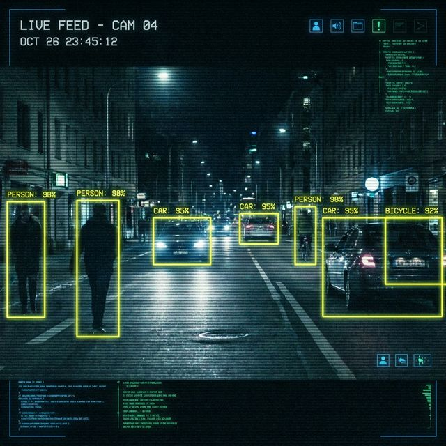
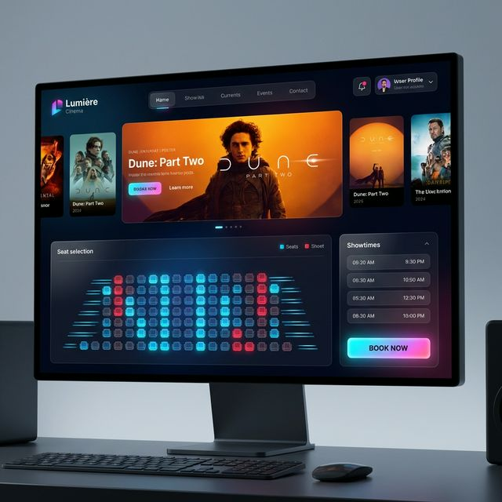

Things I've built
A mix of machine learning, computer vision, research, and full-stack projects — most with code on GitHub. Click any card to flip it and see the details.

Gated Recurrent Unit (GRU)
Flip for details
Gated Recurrent Unit (GRU)
Implemented a GRU model from scratch — input, hidden, and output layers, plus forward and backward passes — trained with RMSProp/Adam and validated on a lake-level time-series dataset.

3-D Object Detection & Identification
Flip for details
3-D Object Detection & Identification
Aligned high-resolution LiDAR point clouds with KITTI camera images and used Frustum PointNet/CloudNet to extract features and detect objects within regions of interest.

Video Sentiment Analysis
Flip for details
Video Sentiment Analysis
Led a team of 5 building a sentiment-detection pipeline with DeepFace and FER models to decode emotion from video content and understand user engagement.
Image Search Engine
Flip for details
Image Search Engine
Built a content-based image retrieval (CBIR) engine combining color histograms and texture descriptors, with a background-aware retrieval method that improved search precision.

Live Object Detection
Flip for details
Live Object Detection
Real-time object detection pipeline for live video streams, built for fast inference on consumer-grade hardware.
Qiskit
Flip for details
Qiskit
Quantum computing research and experimentation built on IBM's Qiskit framework.

A5Cinemas
Flip for details
A5Cinemas
Full-stack cinema management system handling bookings, listings, and admin operations.
Curious about the details?
Check out the full resume or reach out directly — happy to talk through any of these.